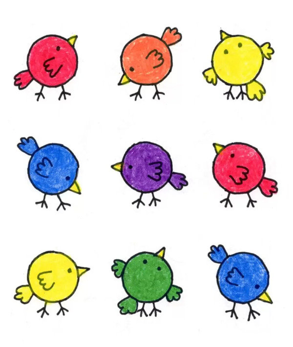

Lucas é um garoto de 9 anos que ama desenhar e pintar, hobby que herdou de seu falecido pai.
Todo dia, após chegar da aula, ele faz suas tarefas de casa, e depois passa seu tempo com seus desenhos, momento em que o garoto realmente consegue ser feliz.
Seu maior sonho é, no futuro, trabalhar com a arte, porém, sua mãe reprova seu sonho, e acredita que ele deveria focar nos estudos para ter, na visão dela, um emprego de verdade.
Lucas quer fazer um curso de Artes Digitais, pois se interessa nessa área.
Sua mãe, no entanto, fala que isso é perda de tempo, e que a escola é mais importante.
O que Lucas deveria fazer?